![]()
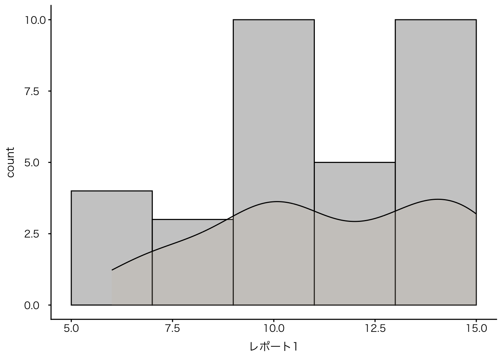
Ⅰ. 講評
1. 配点と結果
以下のように配点いたしました。いずれもシラバス通り、授業で案内した通りです｡
⑴ 授業の感想（初回・学期末授業アンケートを含む）
授業の感想は、初回・学期末授業アンケートを含め、計9回実施しました｡締め切りまでに提出されたレポートについては、1回の提出を3点、すべて提出した者に+3点を加点しました｡小計30点です｡締め切りを超えて提出されたレポートは1点を付けています。誤って提出したもの（例えば、授業の感想を誤ってリーディングアサイメントに提出した）は、適切に読み替えて成績をつけていますので、安心して下さい。
初回に説明したように「楽しかった、勉強になった」などの感想は0点とする方針をとっていますが、そのような不真面目な回答に当たるものはありませんでした｡
アーカイブ配信に用いたvimeoは、投稿者（管理者）が各種視聴データを取得できます。それを見ると、受講生の中には、途中で視聴をやめている者など、動画を視聴しないままに回答している者がいることがわかります。本人を特定できないこと、また、そのような受講生は、後述のように、レポートの成績が低いと推測されますので、特にペナルティは課していませんが、学ぶ機会を自ら放棄している受講生がいることは残念です。
⑵ リーディングアサインメント
リーディングアサインメントは計10回実施いたしました｡締め切りまでに提出されたレポートについては、1回の提出を3点としています｡小計30点です｡こちらもいい加減なものは0点とする方針をとっていますが、該当者はいませんでした｡締め切りを超えて提出されたレポートは1点を付けています。
⑶ レポート
a) レポート1. 芋づる式マップの作成
芋づる式マップを課すレポートです（リンク）｡評価基準は事前に案内した通り（リンク）で、評価の中心はルーブリックです。
こちらも初回の授業などでお話ししている通りですが、授業の感想とリーディングアサインメントは質的な評価をしておらず、提出忘れが多少あっても50点くらいとるであろうことを前提としています。一方で、レポートに関しては質的な評価を重視し、出来不出来、努力の有無によって、配分的正義に即して、成績のグレードが分かれるように評価を付けています。
その結果、評価の低い者と高い者の差が大きくなっています｡平均点は11.4点でした（成績判定の対象でない者は除外）｡各項目の内訳は以下の図を参照下さい。特に優劣の差がついたのは項目3の「政治学または政治現象に関わる資料、文献の読解」でした。少数の限られた受講生にのみ3を付けました。
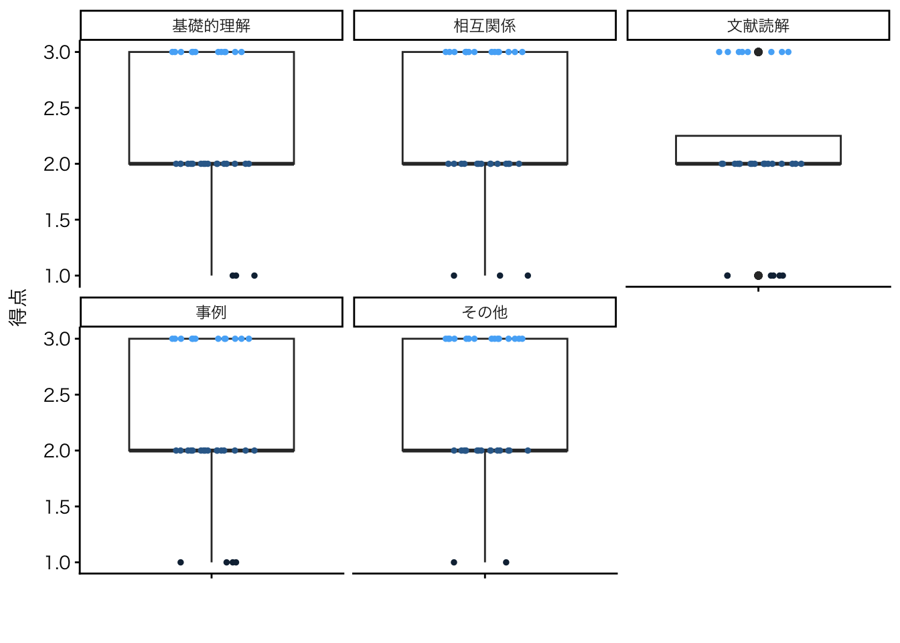
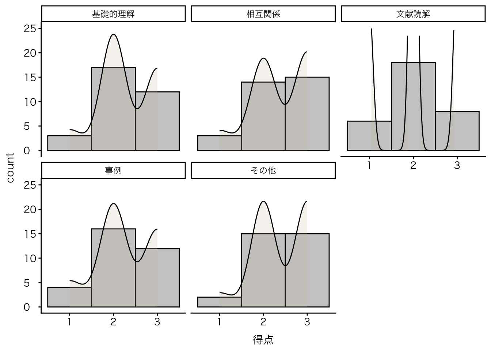
高く評価したレポートは、兼清さん（テーマに一貫性があり、それぞれの説明も自分の言葉で咀嚼している）、西田さん（統計学を四角枠に加えることで、他の四角枠が新しい意味をもっている）、引地さん（限定された合理性と投票コストを結びつけるなど、授業内容を応用的に活用している）です。
低く評価したレポートは、中学校で学習する程度の内容（例えば三権分立）を芋づる式マップに書き、かつ、他のブロックとのつながりがないものです。今回の総選挙の結果は、立法権力と執行権力の分立が危ぶまれるものですので、そのような観点からの分析があれば見事だと思いますが、ただ、空いている枠を埋めただけというレポートは残念としか言いようがありません。また、ガソリン減税の手柄が高市政権にあるかのような説明をしている者が数名いましたが、これは授業内でも説明した通り、石破政権と野党の駆け引きの恩恵です。高市首相が自らの手柄であるかのように説明していましたので、マップ内の説明が「追い風として利用した」などであれば評価に値しますが、単純な事実誤認としか読めないものばかりでした。大学の授業ですので、政治や政権に関する解釈はいろいろあっていいと思いますが、将来、教員を目指すような者がデマに簡単にひっかり、自分の権力性に無頓着にデマ拡散機になるようなことはあってはならないと思います。複数の事実誤認があった場合は、減点しています。
b) レポート2. 試験問題案の作成
公民（中学校）、公共（高校）、政治経済（高校）の試験の作問を課すレポートです（リンク）｡評価基準及び評価についての基本的な考え方は、前項と同じです｡平均点は9.4点でした｡レポート2はレポート1に比して出来不出来の差が大きかったので、以下の通り、多くの項目で優劣がはっきりとついています。
特に言及しておきたいことは、各項目のゼロ点に該当する（「授業で扱った基礎的知識を理解・活用しておらず、受講前と比べて理解の変化が見られない」「授業前と比べて理解の深化が見られない」「授業で扱った資料・文献やそのレベルの資料・文献を読み取ろうとしておらず、授業前と比べて文献理解の変化が見られない」「授業で扱った基礎的知識を理解・活用しておらず、受講前と比べて理解の変化が見られない」）レポートが非常に多かった点です。

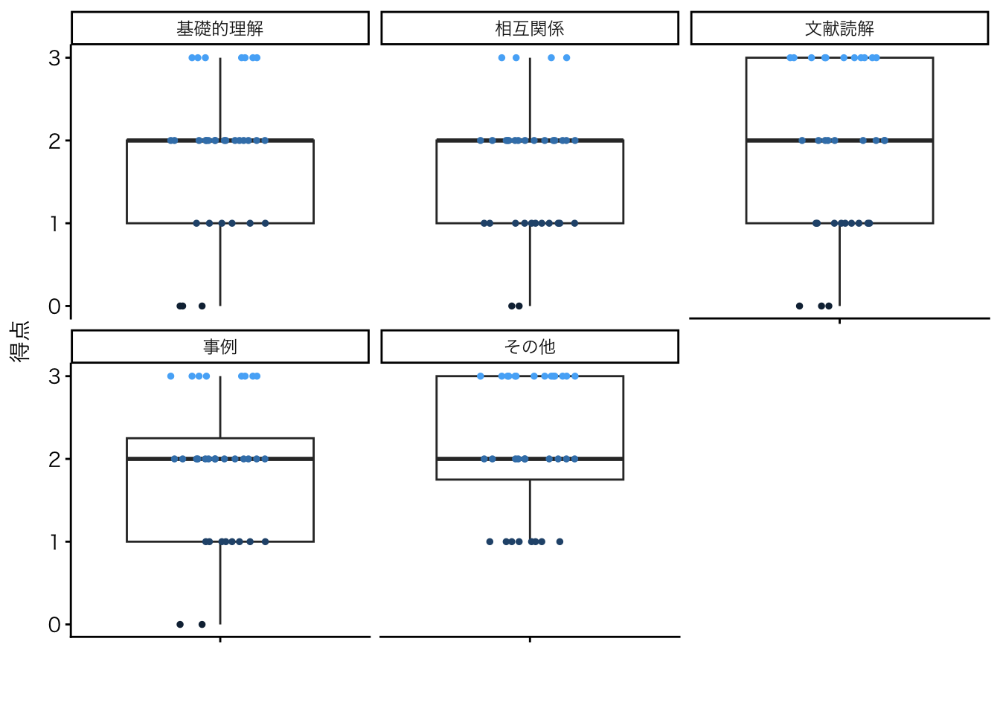
高く評価したレポートは、内坂さん（問題を吟味しており、単純な選択式問題であっても、ポイントを押さえていないと解けない良問ばかり）、片山さん（政治現象を掘り下げて見るための視角が設問にうまく埋め込まれている）、西田さん（政治学の諸概念が政治現象の読解にどう寄与しているのかがよくわかる良問、資料や会話形式の出題にも工夫が見られる）です。
低く評価したレポートは、中学校や高校の社会科で学習するレベルの内容をそのまま出題するに止まり、この授業で学修した事柄がどのように活用できているのかわからないものです。そうした問題が部分的にあってもいいとは思いますが、そのようなものばかりでは何のために授業を受け、どう成長できたのだろうか、という疑問が湧きます。ルーブリックに即して評価されるという意味をよく理解しておらず、提出すれば最低でも6割の点数はもらえると誤解していたのかもしれません。実際には、提出しても15点満点で、0点、1、2点の者が多くいました。
ルーブリックを用いることで、教員は、直感的、感覚的な評価を避けることができます。また、受講生に何が評価され、何が評価されなかったのかを具体的に伝えることができます。これがルーブリックを活用する利点です。レポート評価に用いたルーブリックについては、簡単なコメントを付して、成績が開示されるであろう3月下旬に個別にメールで返却する予定です。
4. ディスカッション
第9講 (2月4日2限) に実施した「国会中継を報道してみよう」と、第14回(2月6日3限 ) に実施した「レポート2. 試験問題案の作成の構想」にもとづき評価しました。各5点です。みなさん、熱心に取り組んでいたと思いますので、参加した者全員に4点、グループで選出された者（ファシリテータを含む）にもう1点を加点しました。
2. 成績分布
全体の成績評価は以下の通りとなりました。「秀」の比率がもっとも高く、今年度も多くの受講生によい評価を付けることができてよかったと思います。
一方で、2種のレポートを提出し成績判定の要件を満たしていたにもかからず、「不可」が2名出ました。「可」についても同様ですが、授業の感想、リーディングアサインメントの提出率が低く、かつ、レポートの不出来が重なっています（以下の散布図を参照下さい）。いい加減な態度で授業に臨んでおり、レポートも舐めてかかればそうなるような、というのが率直な感想です。
余計なお世話とは思いますが、そのような方は学修態度を見直した方がいいのではないかと思いました。特に2年生に顕著です。単位さえ取得できればいいと思っているのかもしれませんね。島根大学教育学部でGPAがどのように扱われているのか知りませんが、大学によってはGPAが高い者には選択肢が多く与えられたり、各種選択の際によい優先順位が付されますので、心配になりました。
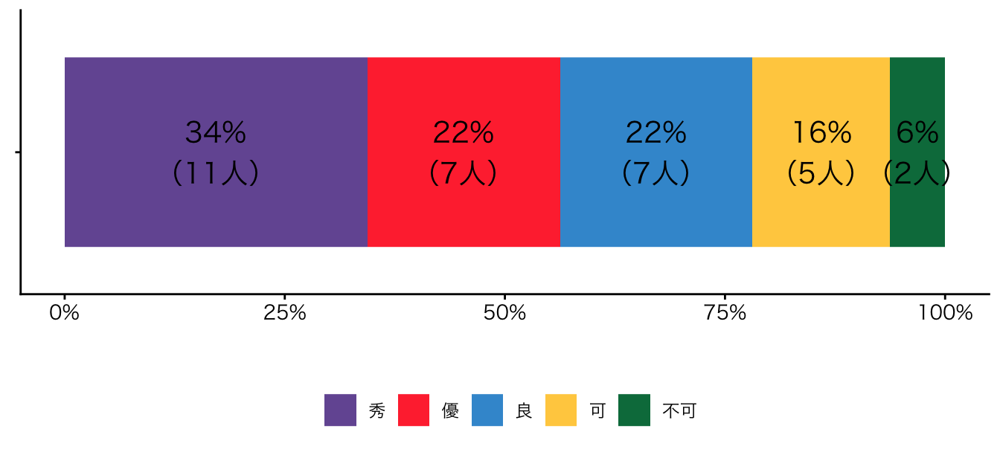
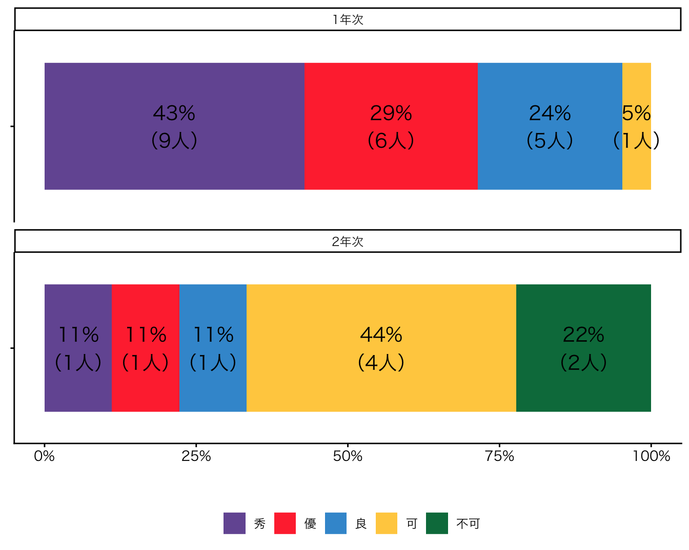
3. 検証
授業デザインの検証のために散布図などを作っていますが、レポート1とレポート2の出来不出来は中程度の相関が確認され、また、授業の感想（提出率）とレポートの出来不出来の相関も同様の程度で確認されました。
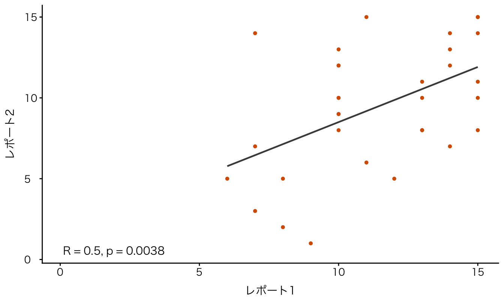
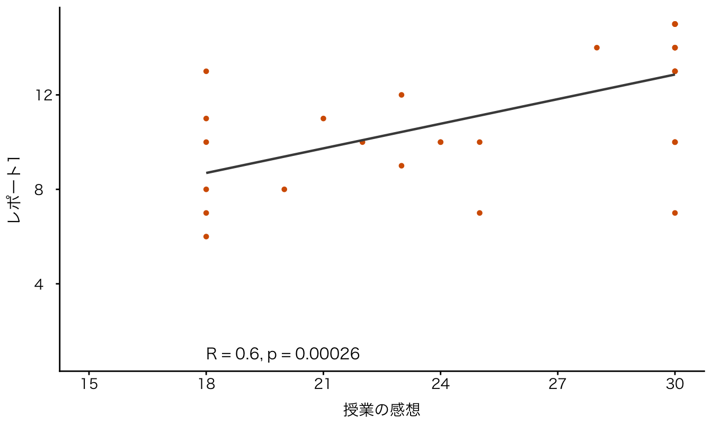

Ⅱ. 学期末授業アンケート
1. 回答率
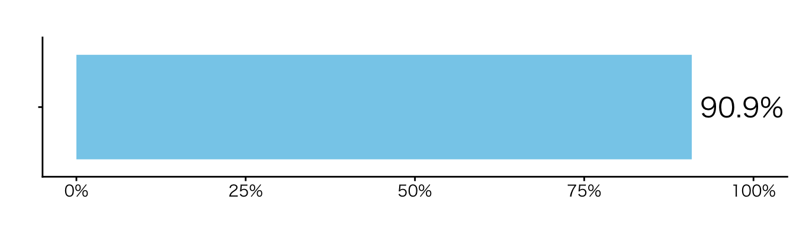
2. 成長に関わる自己認識
成長に関わる自己認識は、「学修者本位の教育へ転換を図る」ことを目指す文部科学省が近年重視している項目の一つです（全国学生調査）。
- Q3. 受講生が、国民主権を中心とした公民分野の基礎的知識を得て、初学者に対してわかりやすく説明することができる。（公民）
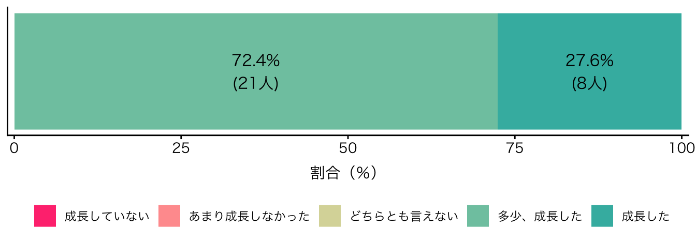
- Q4. 受講生が、選挙制度、政党、政治体制といった政治学の基礎的知識を得て、初学者に対してわかりやすく説明することができる。（基礎的関心）
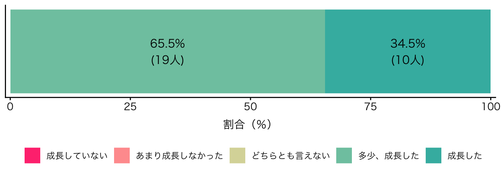
- Q5. 受講生が､政治学の諸概念について､自分なりの視点を加味した､関係図を作成することができる。（基礎的関心）

- Q6. 受講生が、政治学ならびに公民分野に関わる基本的な資料、文献を読みこなすことができる。（論理的思考・文献読解能力）
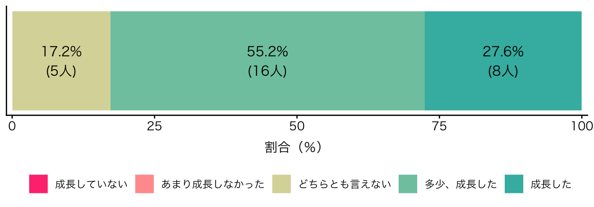
- Q7. 受講生が、1及び2で得た知識を背景に、日々のニュース報道や新聞報道をより深く、また相対的に理解したうえで、自分自身の意見や解釈を、確かな根拠を明示しながら、明快に記述することができる。（論理的思考・記述能力）
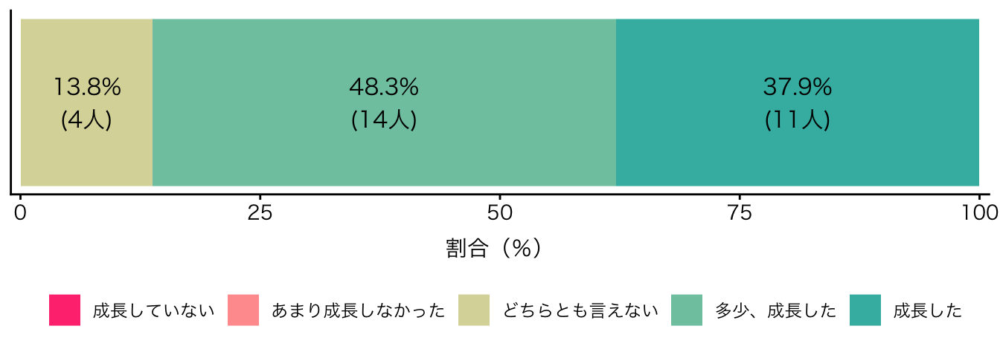
3. 所感
多くの受講生が、授業の到達目標に関わる成長を認識できているようで、この点はとてもよかったと思います。
自己認識と成績評価を対応させてみましたが、あまり関係はないようです。ですので、「どちらとも言えない」と回答した受講生であっても、私は高く評価していると言えると思います。ただし、Q6については、自己認識と成績に一定の関係が見られたので、ここが政治学の理解の壁であり、よりよく理解するための鍵かもしれません。内容的、論理的に考えても、そう思います。
一方で成長できたと自認していても、私にはとてもそうは思えない者が数名いたことも留意すべき点だと思います。各自、成績評価や返却されたルーブリックを見て、ギャップがあった場合は、自分なりに問題点を検証して下さい。
自由記述欄に質問的なコメントがあったので、ここで回答しておきます。
まず、リーディングアサインメントはどれもおもしろかったのですが、どうやって探しているのですか、という質問についてです。研究者に関しては、研究大会などに参加して面白いことを話す先生だな、と思ってチェックしていることはあるかもしれません。私が面白いと感じるのは、先行研究や世間とは異なる見方をしているか、アイロニカルな説明をしている場合です。リーディングアサインメントで紹介した研究者は、政治学者であれば知らない者はいないほど著名な人ばかりなので、ある程度は、著名＝面白い、と言えるのではないでしょうか。トピックとの絡みで授業では紹介できませんでしたが、先日、「明六社：森有礼、西周、福澤諭吉らが集った知的結社」を公刊された河野有理先生の政治観察・社会観察は非常に鋭く、勉強になります。河野有理 (2020) や 河野有理 (2024) は普遍性がある論説であり、リーディングアサインメントを面白く読めたのであれば、同じように面白く読めるでしょう。
新聞記事など、研究者以外の文献については、初回でお話しした通り、新聞などを読んでいるくらいです（私は、「こたつ記事」、テレビ、YouTube、SNSの類は、まったく信用しておらず、世相を観察する必要に迫られない限りは、触れないようにしているので、よく知りません）。新聞を読むことは、楽しいばかりでなく、苦行とも言えます（大体、ロシア・ウクライナ戦争のレイプ犯罪など、暗い話が多いので）。ですが、私も含め、社会を観察する者、社会について教える者であれば、避けてはならない道だと思います。
また、今後の政治の見通しに関する質問もありました。授業で行ったように、テレビ番組が切り抜いた場面ではなく、予算委員会全体をチェックしていますが、政権、与党内の緊張感のなさ、委員長の横暴さが目につきます。政府の統制下にあるのかと訝しくなるNHK「ニュース7」は言うに及ばずですが、新聞の見出しも、「首相、野党の追及をかわす」、「首相、「不適切と思っていない」と答弁」といった事態の深刻さを表していないものが多いという印象です。
選挙結果に関しては、菅原琢先生の「自民党圧勝を生み出したのは「高市人気」でも「小選挙区制」でもない【2026年衆院選分析】」と、星野俊樹さん（「とびこえる教室」）の「『いい人』が社会を停滞させる？私たちが政治と教育に抱く「勘違い」が重要な指摘を行なっていると思います。前者は、自民比例票と自民小選挙区票のギャップに着目し、メディア分析の中心と言えるSNS選挙や「サナ活」を退けている点で秀逸です。
比例区で投票者の37%しか票を入れていない政党が、小選挙区の側で不用意に9割近い議席を得て衆院の3分の2を超える議席率となった事実は、日本の並立制が民主主義の制度として何か重大な欠陥を抱えていると疑わせるに十分である。世論とその変化に対し選挙結果が適切に応答しないことは、並立制のみならず民主主義に対する信頼を損なうものだろう。
元小学校教諭が書かれた後者は、前半部の選挙分析を踏まえた道徳教育が興味深いです。
本来、道徳教育は他者と共に生きる哲学でありえたはずです。しかし実際に強調されたのは、努力、忍耐、自己管理、内面の修養でした。社会を問う視点よりも、自分を改善する語りが前面に出る。ここで失われたのは、批判的思考です。自分の苦しさを構造の側に問い返す力。制度を疑う視点。権力を分析する言葉。それらが「努力不足」の物語に吸収されてしまうのです。
社会科教諭の本当の力量が試される場面は、まさにここではないか、と思います（知識量ではなく）。
Ⅲ. 政治学概論Ⅱの案内
来年度開講する政治学概論Ⅱも引き続き、私が担当することになりました。オンライン・対面などの授業の方式は今回と同じです。政治学概論Ⅱは、Ⅰでは触れられなかった国際政治について多く割く他、Ⅰの基礎的な内容を発展させた国際比較を行います。興味がある方は、どうぞ、引き続き、よろしくお願いします。
References
河野有理 (2020) 「「不思議の勝ち」を抱きしめて」. 『Voice』, No.6月, pp.86–93.
河野有理 (2024) 「中道政治は復活するか：試される政党の「濾過」と「吸い上げ」機能」. 『中央公論』, Vol.138, No.12, pp.88–95. Available at: https://cir.nii.ac.jp/crid/1520020697895257600.